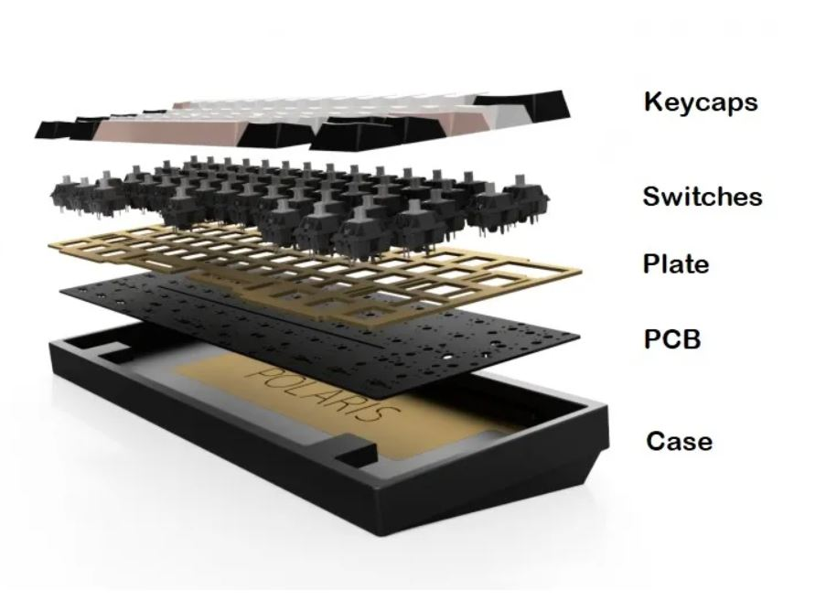

A Custom Keyboard is where a person pick any switches, any mount, keycaps, and control what kind of sound and feels depending on their liking. The advantage includes unlimited amount of options and flexibility. The disadvantages are more costly (depend on your choices) and can be difficult for beginners.
Prebuild keyboard can be purchase anywhere, all the components have built together for you and ready to use. The advantages can be it is convenient to purchase any electronic selection and save headache and time compare to custom build. The disadvantage is options might be limited and can be expensive due to prebuild.
